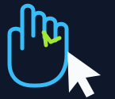

Capture
OpenCV reads frames from the local webcam.
WEBCAM
Gesture Mouse View sourceLocal computer-vision prototype
A Python desktop experiment that follows hand landmarks from a webcam and maps a few gestures to the operating system pointer.
Not a browser app. Camera, preview window, and pointer control run on your own computer.
THE PIPELINE
This is an authored workflow diagram based on the repository implementation, not a captured application screenshot.
OpenCV reads frames from the local webcam.
WEBCAMMediaPipe estimates hand landmarks in each frame.
HAND LANDMARKSGesture and coordinate logic maps movement and pinches.
GESTURE LOGICPyAutoGUI sends pointer, click, and scroll actions.
DESKTOP CONTROLCONTROLS
Place the index fingertip inside the blue tracking box to move the pointer, with smoothing.
Bring thumb and index finger together for a click with a short repeat delay.
Raise index and middle fingers, then move vertically to scroll.
BEFORE YOU RUN IT
LOCAL PROCESSING
The project code processes webcam frames locally. Desktop actions are disabled until you press t in the camera window. Press q to exit. This static page has no webcam access, API, or gesture simulator.
TRY THE DESKTOP PROJECT